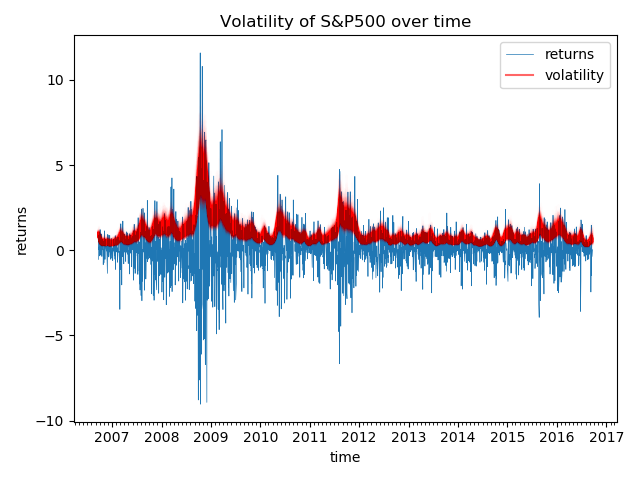

Note
Click here to download the full example code
Stochastic Volatility¶
Generative model:
This example is from PyMC3 [1], which itself is adapted from the original experiment from [2]. A discussion about translating this in Pyro appears in [3].
We take this example to illustrate how to use the functional interface hmc. However, we recommend readers to use MCMC class as in other examples because it is more stable and has more features supported.
References:

Stochastic Volatility Model, https://docs.pymc.io/notebooks/stochastic_volatility.html
The No-U-Turn Sampler: Adaptively Setting Path Lengths in Hamiltonian Monte Carlo, https://arxiv.org/pdf/1111.4246.pdf
Pyro forum discussion, https://forum.pyro.ai/t/problems-transforming-a-pymc3-model-to-pyro-mcmc/208/14
Out:
Downloading - https://d2hg8soec8ck9v.cloudfront.net/datasets/SP500.csv.
Download complete.
==================== sigma ====================
(p20.000000298023224)(p40.00000059604645) (p50.0)(p60.00000238418579)(p80.0000011920929)
0.082 0.087 0.090 0.093 0.100
==================== nu ====================
(p20.000000298023224)(p40.00000059604645) (p50.0)(p60.00000238418579)(p80.0000011920929)
9.927 11.409 12.126 13.009 15.842
==================== volatility ====================
(p20.000000298023224)(p40.00000059604645) (p50.0)(p60.00000238418579)(p80.0000011920929)
9/21/06 0.866 0.909 0.927 0.949 0.996
(p20.000000298023224)(p40.00000059604645) (p50.0)(p60.00000238418579)(p80.0000011920929)
6/21/07 0.673 0.753 0.793 0.836 0.923
(p20.000000298023224)(p40.00000059604645) (p50.0)(p60.00000238418579)(p80.0000011920929)
3/19/08 1.347 1.504 1.573 1.635 1.826
(p20.000000298023224)(p40.00000059604645) (p50.0)(p60.00000238418579)(p80.0000011920929)
12/10/08 2.441 2.733 2.876 3.015 3.391
(p20.000000298023224)(p40.00000059604645) (p50.0)(p60.00000238418579)(p80.0000011920929)
9/10/09 0.774 0.877 0.928 0.970 1.117
(p20.000000298023224)(p40.00000059604645) (p50.0)(p60.00000238418579)(p80.0000011920929)
6/9/10 1.298 1.442 1.513 1.589 1.794
(p20.000000298023224)(p40.00000059604645) (p50.0)(p60.00000238418579)(p80.0000011920929)
3/4/11 0.730 0.804 0.839 0.872 0.981
(p20.000000298023224)(p40.00000059604645) (p50.0)(p60.00000238418579)(p80.0000011920929)
11/23/11 1.336 1.483 1.564 1.645 1.855
(p20.000000298023224)(p40.00000059604645) (p50.0)(p60.00000238418579)(p80.0000011920929)
8/23/12 0.451 0.513 0.538 0.570 0.626
(p20.000000298023224)(p40.00000059604645) (p50.0)(p60.00000238418579)(p80.0000011920929)
5/29/13 0.635 0.708 0.746 0.783 0.878
(p20.000000298023224)(p40.00000059604645) (p50.0)(p60.00000238418579)(p80.0000011920929)
2/25/14 0.521 0.586 0.611 0.638 0.730
(p20.000000298023224)(p40.00000059604645) (p50.0)(p60.00000238418579)(p80.0000011920929)
11/14/14 0.383 0.444 0.467 0.492 0.558
(p20.000000298023224)(p40.00000059604645) (p50.0)(p60.00000238418579)(p80.0000011920929)
8/17/15 0.931 1.040 1.093 1.156 1.310
(p20.000000298023224)(p40.00000059604645) (p50.0)(p60.00000238418579)(p80.0000011920929)
5/13/16 0.560 0.624 0.650 0.680 0.752
import argparse
import os
import matplotlib
import matplotlib.dates as mdates
import matplotlib.pyplot as plt
import jax.numpy as jnp
import jax.random as random
import numpyro
import numpyro.distributions as dist
from numpyro.examples.datasets import SP500, load_dataset
from numpyro.infer.hmc import hmc
from numpyro.infer.util import initialize_model
from numpyro.util import fori_collect
matplotlib.use('Agg') # noqa: E402
def model(returns):
step_size = numpyro.sample('sigma', dist.Exponential(50.))
s = numpyro.sample('s', dist.GaussianRandomWalk(scale=step_size, num_steps=jnp.shape(returns)[0]))
nu = numpyro.sample('nu', dist.Exponential(.1))
return numpyro.sample('r', dist.StudentT(df=nu, loc=0., scale=jnp.exp(s)),
obs=returns)
def print_results(posterior, dates):
def _print_row(values, row_name=''):
quantiles = jnp.array([0.2, 0.4, 0.5, 0.6, 0.8])
row_name_fmt = '{:>8}'
header_format = row_name_fmt + '{:>12}' * 5
row_format = row_name_fmt + '{:>12.3f}' * 5
columns = ['(p{})'.format(q * 100) for q in quantiles]
q_values = jnp.quantile(values, quantiles, axis=0)
print(header_format.format('', *columns))
print(row_format.format(row_name, *q_values))
print('\n')
print('=' * 20, 'sigma', '=' * 20)
_print_row(posterior['sigma'])
print('=' * 20, 'nu', '=' * 20)
_print_row(posterior['nu'])
print('=' * 20, 'volatility', '=' * 20)
for i in range(0, len(dates), 180):
_print_row(jnp.exp(posterior['s'][:, i]), dates[i])
def main(args):
_, fetch = load_dataset(SP500, shuffle=False)
dates, returns = fetch()
init_rng_key, sample_rng_key = random.split(random.PRNGKey(args.rng_seed))
model_info = initialize_model(init_rng_key, model, model_args=(returns,))
init_kernel, sample_kernel = hmc(model_info.potential_fn, algo='NUTS')
hmc_state = init_kernel(model_info.param_info, args.num_warmup, rng_key=sample_rng_key)
hmc_states = fori_collect(args.num_warmup, args.num_warmup + args.num_samples, sample_kernel, hmc_state,
transform=lambda hmc_state: model_info.postprocess_fn(hmc_state.z),
progbar=False if "NUMPYRO_SPHINXBUILD" in os.environ else True)
print_results(hmc_states, dates)
fig, ax = plt.subplots(1, 1)
dates = mdates.num2date(mdates.datestr2num(dates))
ax.plot(dates, returns, lw=0.5)
# format the ticks
ax.xaxis.set_major_locator(mdates.YearLocator())
ax.xaxis.set_major_formatter(mdates.DateFormatter('%Y'))
ax.xaxis.set_minor_locator(mdates.MonthLocator())
ax.plot(dates, jnp.exp(hmc_states['s'].T), 'r', alpha=0.01)
legend = ax.legend(['returns', 'volatility'], loc='upper right')
legend.legendHandles[1].set_alpha(0.6)
ax.set(xlabel='time', ylabel='returns', title='Volatility of S&P500 over time')
plt.savefig("stochastic_volatility_plot.pdf")
plt.tight_layout()
if __name__ == "__main__":
assert numpyro.__version__.startswith('0.3.0')
parser = argparse.ArgumentParser(description="Stochastic Volatility Model")
parser.add_argument('-n', '--num-samples', nargs='?', default=600, type=int)
parser.add_argument('--num-warmup', nargs='?', default=600, type=int)
parser.add_argument('--device', default='cpu', type=str, help='use "cpu" or "gpu".')
parser.add_argument('--rng_seed', default=21, type=int, help='random number generator seed')
args = parser.parse_args()
numpyro.set_platform(args.device)
main(args)
Total running time of the script: ( 0 minutes 52.195 seconds)